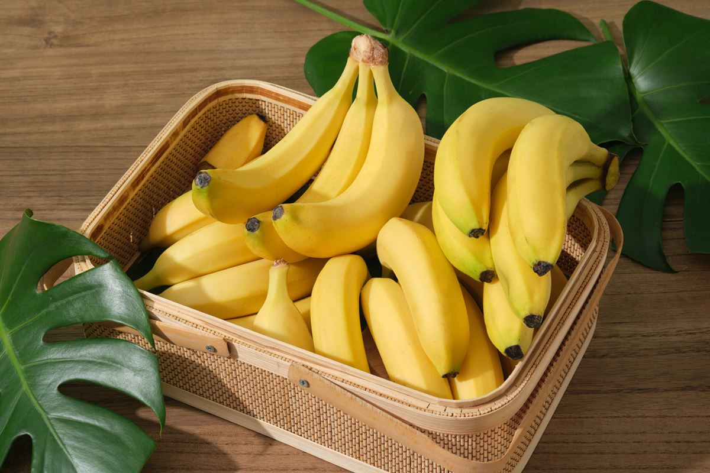
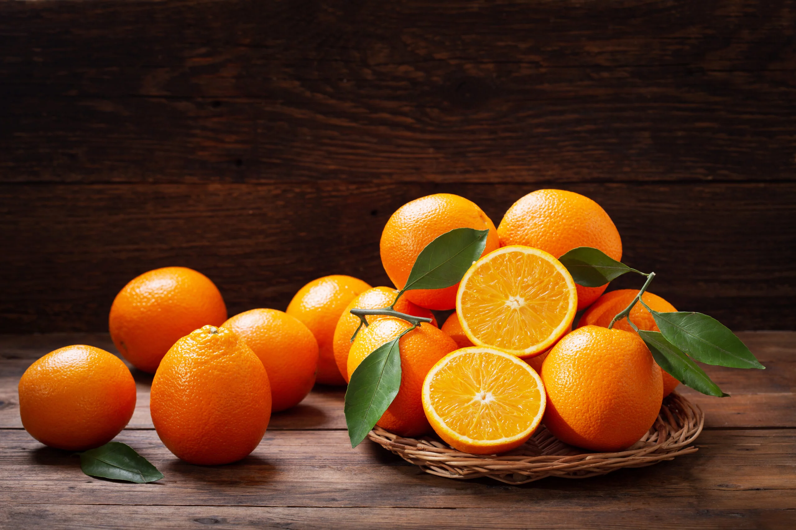
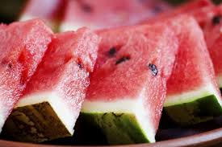

1. Maçã: Maçã é uma fruta deliciosa e saudável, rica em fibras e antioxidantes.

2. Banana: Banana é uma fruta tropical rica em potássio e vitamina C.

3. Laranja: Laranja é uma fruta cítrica rica em vitamina C e antioxidantes.

4. Uva: Uva é uma fruta doce e suculenta, rica em antioxidantes e vitaminas.

5. Melancia: Melancia é uma fruta refrescante e hidratante, perfeita para o verão.
